<section class="oe_container" style="font-family: 'Inter', 'Roboto', Arial, sans-serif; color: #1f2937;">
    <div class="oe_row oe_spaced" style="max-width: 1080px; margin: 0 auto; padding: 32px 16px;">

        <!-- Hero -->
        <div style="text-align: center; padding: 28px 12px 8px;">
            <p style="display: inline-block; padding: 4px 14px; border-radius: 20px; background: #e6f4f3; color: #0e7c78; font-weight: 600; font-size: 13px; margin-bottom: 14px;">AXSync &middot; Odoo 16.0</p>
            <h1 style="font-size: 40px; font-weight: 800; color: #12286b; margin: 0 0 12px;">List View Manager</h1>
            <p style="font-size: 19px; color: #4b5563; max-width: 760px; margin: 0 auto 22px; line-height: 1.5;">
                Every Odoo list, exactly how each user wants to work. Choose, order, rename and size columns, add any field,
                filter under each column, edit inline, export what you see and copy rows straight into a spreadsheet.
            </p>
            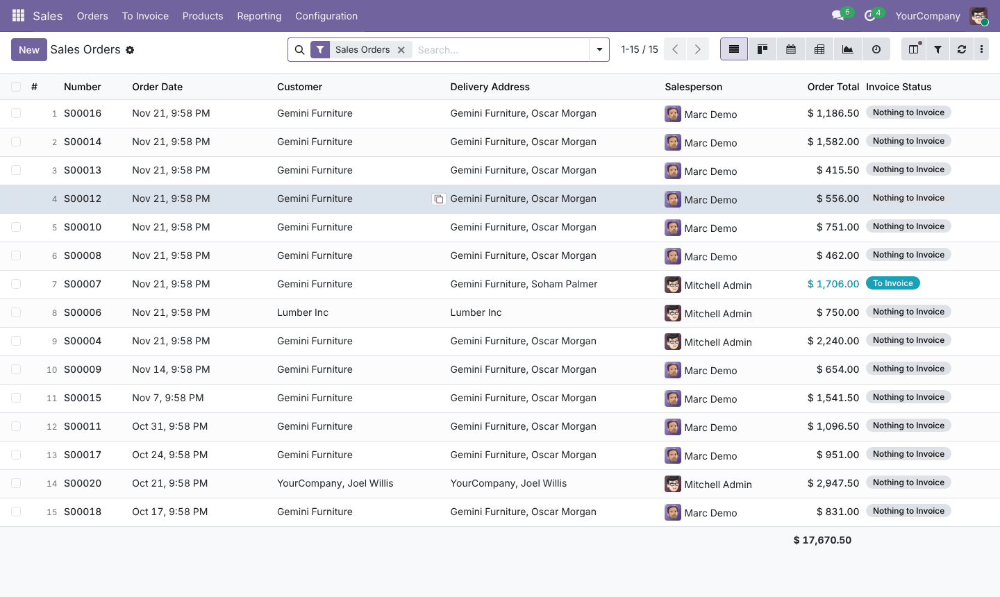
        </div>

        <!-- Benefits -->
        <div style="display: flex; flex-wrap: wrap; gap: 16px; margin: 40px 0 8px;">
            <div style="flex: 1 1 230px; background: #f8fafc; border: 1px solid #e5e7eb; border-radius: 10px; padding: 18px;">
                <h4 style="color: #12286b; margin: 0 0 6px; font-size: 17px;">Lists that fit the job</h4>
                <p style="margin: 0; color: #4b5563; font-size: 14px; line-height: 1.5;">Each user keeps the columns they need, in their order, with their names and widths. Saved automatically on the server.</p>
            </div>
            <div style="flex: 1 1 230px; background: #f8fafc; border: 1px solid #e5e7eb; border-radius: 10px; padding: 18px;">
                <h4 style="color: #12286b; margin: 0 0 6px; font-size: 17px;">Answers without reports</h4>
                <p style="margin: 0; color: #4b5563; font-size: 14px; line-height: 1.5;">Filter under each column with text, number ranges, date ranges and dropdowns, combined with Group By and Favorites.</p>
            </div>
            <div style="flex: 1 1 230px; background: #f8fafc; border: 1px solid #e5e7eb; border-radius: 10px; padding: 18px;">
                <h4 style="color: #12286b; margin: 0 0 6px; font-size: 17px;">Team-wide consistency</h4>
                <p style="margin: 0; color: #4b5563; font-size: 14px; line-height: 1.5;">Administrators publish a default layout per list. New team members start with the right view on day one.</p>
            </div>
            <div style="flex: 1 1 230px; background: #f8fafc; border: 1px solid #e5e7eb; border-radius: 10px; padding: 18px;">
                <h4 style="color: #12286b; margin: 0 0 6px; font-size: 17px;">Safe and native</h4>
                <p style="margin: 0; color: #4b5563; font-size: 14px; line-height: 1.5;">No view is modified, every action follows Odoo access rights, and uninstalling restores the standard lists.</p>
            </div>
        </div>

        <!-- Feature blocks -->
        <h2 style="text-align: center; color: #12286b; font-weight: 800; font-size: 30px; margin: 48px 0 6px;">Everything a list should do</h2>
        <p style="text-align: center; color: #6b7280; margin: 0 0 28px;">All features work on the lists of every app, including your own custom models.</p>

        <div style="margin-bottom: 44px;">
            <h3 style="color: #0e7c78; font-size: 22px; margin-bottom: 6px;">Column manager: show, hide, drag and drop, rename, search</h3>
            <p style="color: #4b5563; line-height: 1.6;">Open <b>Columns</b> from the list toolbar. Switch columns on or off (including optional columns and the Buttons column), drag them into place, rename them for yourself, search them, choose a row density, wrap long text and restore the default list in one click. Changes apply instantly and are saved for your user and this list.</p>
            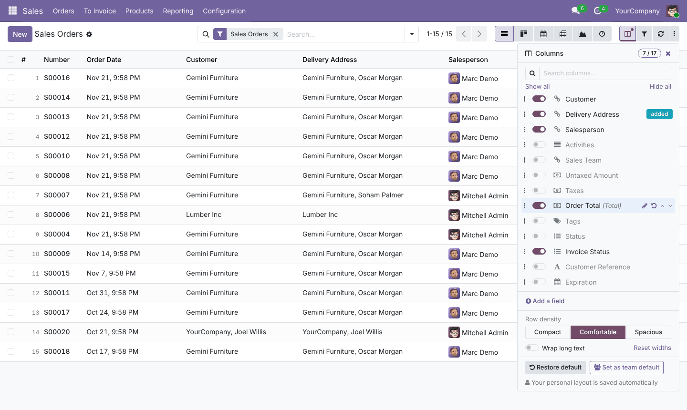
        </div>

        <div style="margin-bottom: 44px;">
            <h3 style="color: #0e7c78; font-size: 22px; margin-bottom: 6px;">Add any field as a column</h3>
            <p style="color: #4b5563; line-height: 1.6;">Missing a field in a list? Pick it from <b>Add a field</b>: text, numbers, dates, selections, related records and tags. No Studio, no developer, and field access rights still apply.</p>
            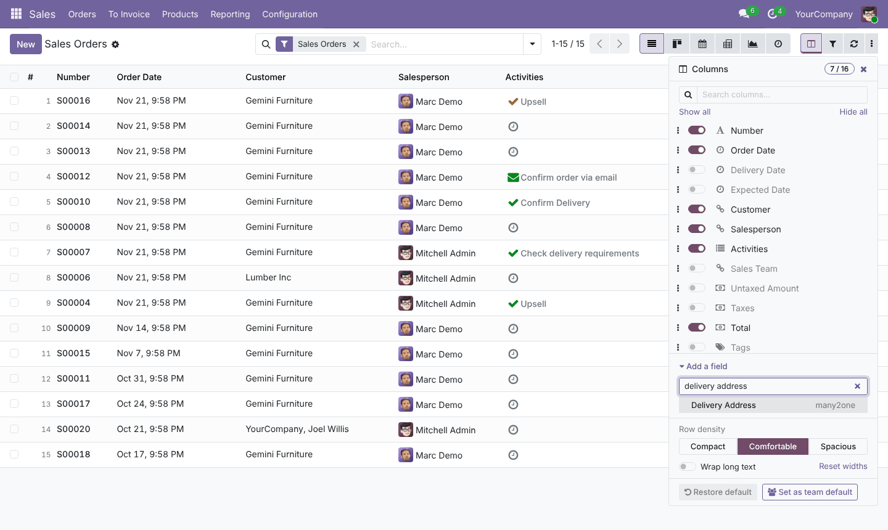
        </div>

        <div style="margin-bottom: 44px;">
            <h3 style="color: #0e7c78; font-size: 22px; margin-bottom: 6px;">Column filters that understand the data</h3>
            <p style="color: #4b5563; line-height: 1.6;">Click <b>Filters</b> to open a search row under the header. Text and related records use "contains", numbers accept <code>&gt;1000</code>, <code>&lt;=5</code> or <code>10..50</code>, dates use a from / to range, selections and Yes/No fields use dropdowns. Each filter becomes a normal search facet, so it combines with Group By and can be saved as a Favorite.</p>
            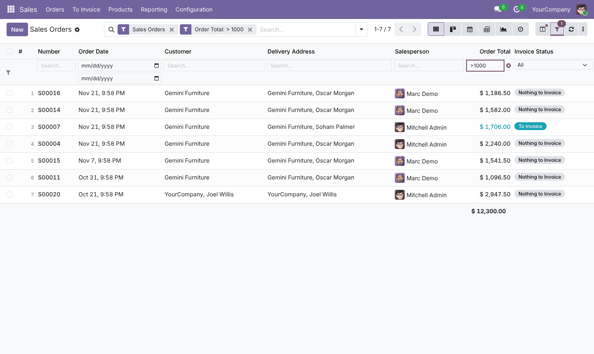
            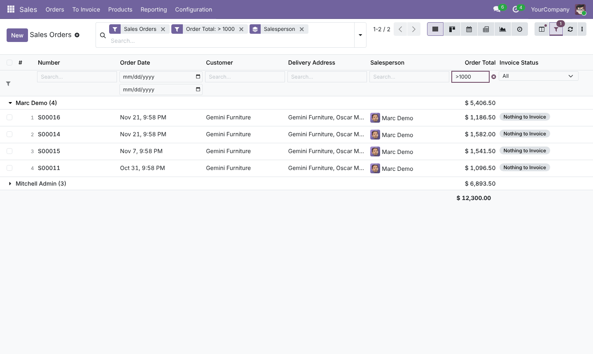
        </div>

        <div style="margin-bottom: 44px;">
            <h3 style="color: #0e7c78; font-size: 22px; margin-bottom: 6px;">Read / Edit mode, reload, auto refresh and export</h3>
            <p style="color: #4b5563; line-height: 1.6;">The <b>More</b> menu switches inline editing on or off, exports the current view to Excel with your column names and order, and refreshes the list automatically every 30 seconds, 1, 5 or 15 minutes. The <b>Reload</b> button refreshes data without reloading the page.</p>
            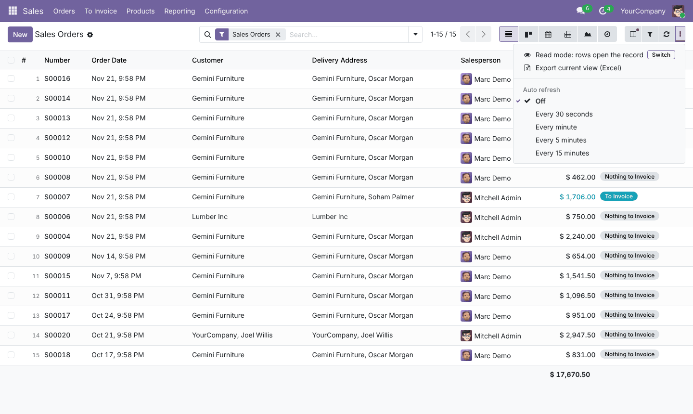
            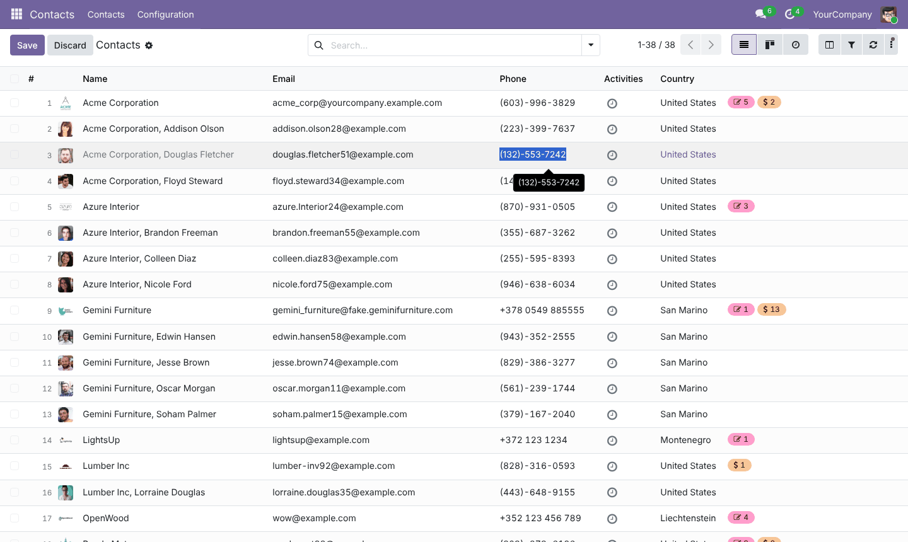
        </div>

        <div style="margin-bottom: 44px;">
            <h3 style="color: #0e7c78; font-size: 22px; margin-bottom: 6px;">Copy a cell, copy rows, duplicate records</h3>
            <p style="color: #4b5563; line-height: 1.6;">Hover a cell and click the copy icon to copy its value. Select rows and use <b>Actions, Copy Rows</b> to paste them as a table into Excel or Google Sheets, <b>Export Selection (Current View)</b> for a file, or <b>Duplicate</b> to copy several records at once.</p>
            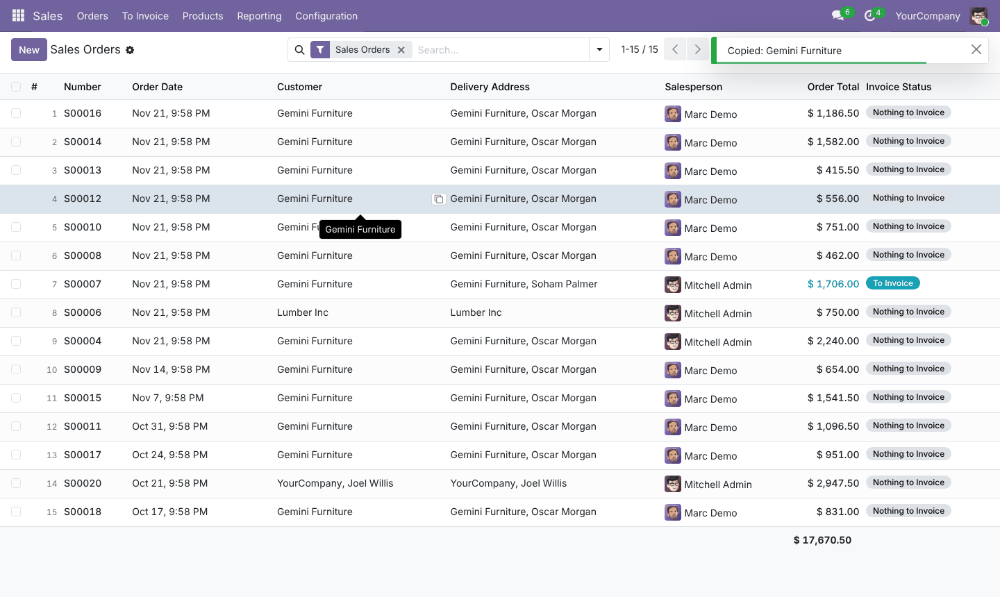
            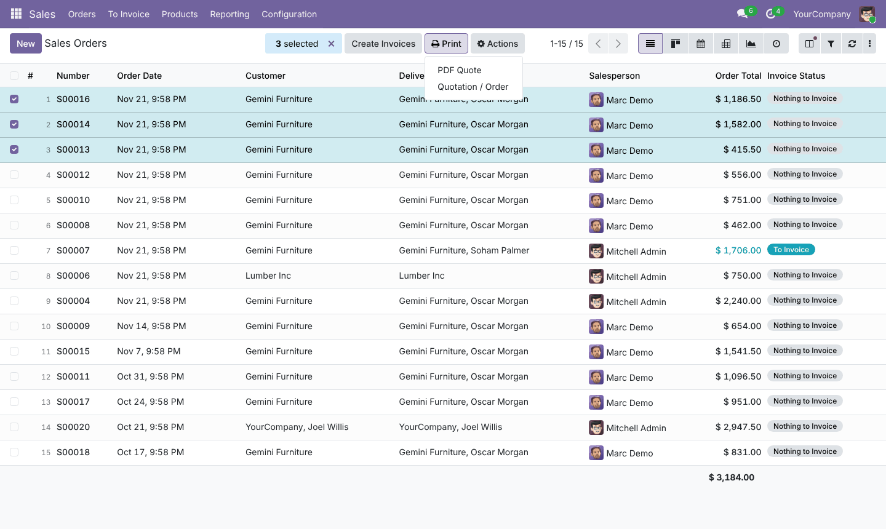
        </div>

        <div style="margin-bottom: 44px;">
            <h3 style="color: #0e7c78; font-size: 22px; margin-bottom: 6px;">Serial numbers, hover highlight, persistent widths, density</h3>
            <p style="color: #4b5563; line-height: 1.6;">A <b>#</b> column numbers every row across pages and groups. The row under the pointer is highlighted. Drag a column border and the width is remembered. Choose Compact, Comfortable or Spacious rows for each list.</p>
            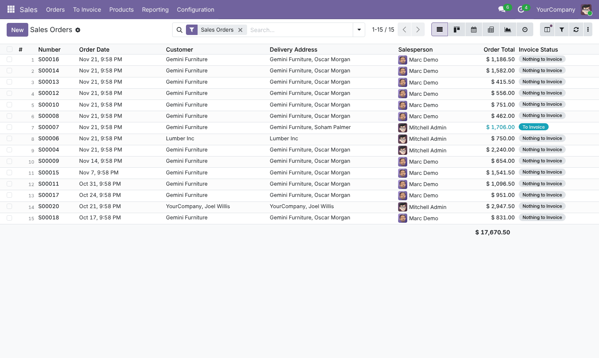
        </div>

        <div style="margin-bottom: 44px;">
            <h3 style="color: #0e7c78; font-size: 22px; margin-bottom: 6px;">Team default layouts</h3>
            <p style="color: #4b5563; line-height: 1.6;">Administrators arrange a list and click <b>Set as team default</b>. Users without a personal layout get it immediately; anyone can return to it with <b>Restore default</b>.</p>
            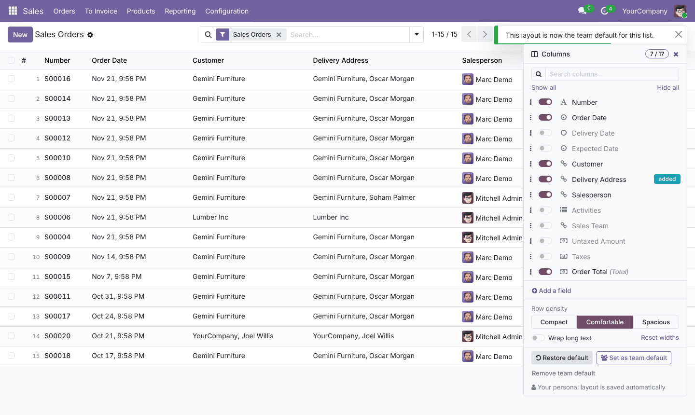
        </div>

        <div style="margin-bottom: 44px;">
            <h3 style="color: #0e7c78; font-size: 22px; margin-bottom: 6px;">Full control in Settings</h3>
            <p style="color: #4b5563; line-height: 1.6;">Switch each feature on or off, choose the header, text, hover and toggle colors, disable the module on specific models and review every saved layout.</p>
            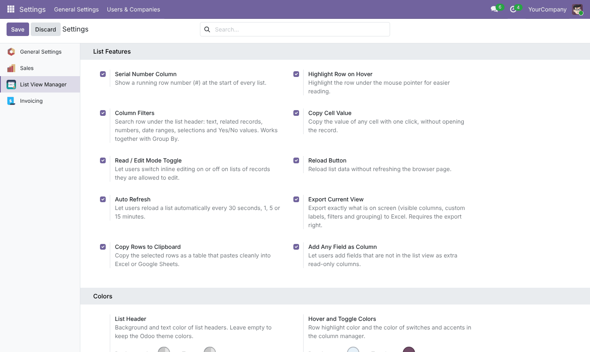
            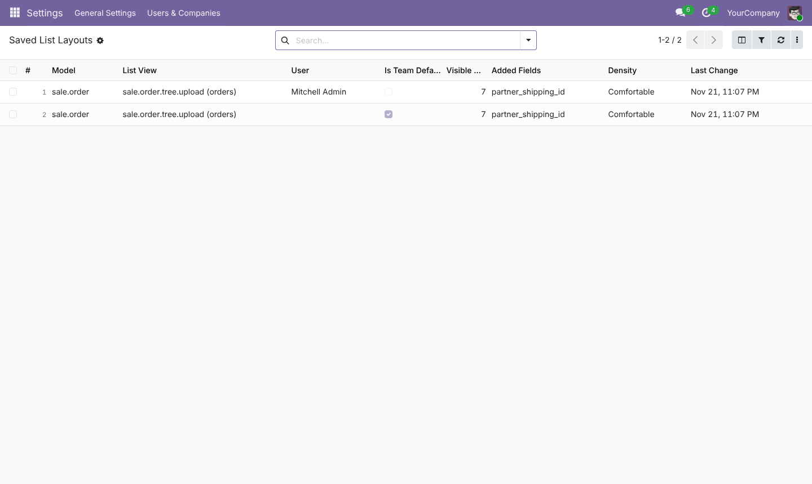
        </div>

        <div style="margin-bottom: 44px;">
            <h3 style="color: #0e7c78; font-size: 22px; margin-bottom: 6px;">Running on Odoo 16.0</h3>
            <p style="color: #4b5563; line-height: 1.6;">Screenshot taken on Odoo 16.0 with this package.</p>
            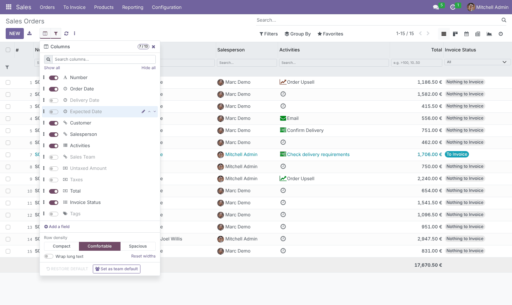
        </div>

        <!-- Feature checklist -->
        <div style="display: flex; flex-wrap: wrap; gap: 24px; background: #12286b; color: #ffffff; border-radius: 12px; padding: 28px; margin: 16px 0 40px;">
            <div style="flex: 1 1 300px;">
                <h3 style="color: #ffc43c; margin-top: 0;">Core features</h3>
                <ul style="line-height: 1.9; padding-left: 18px; margin: 0;">
                    <li>Show / hide, drag and drop, rename and search columns</li>
                    <li>Persistent column widths, restore default</li>
                    <li>Layouts saved per user and per list, on the server</li>
                    <li>Serial number column and row hover highlight</li>
                    <li>Read / Edit mode toggle</li>
                    <li>Column filters with Group By, related field search</li>
                    <li>Reload without page refresh, copy a cell value</li>
                    <li>Export current view, duplicate selected records</li>
                    <li>Header, text, hover and toggle colors</li>
                </ul>
            </div>
            <div style="flex: 1 1 300px;">
                <h3 style="color: #ffc43c; margin-top: 0;">AXSync additions</h3>
                <ul style="line-height: 1.9; padding-left: 18px; margin: 0;">
                    <li>Add any field as a column</li>
                    <li>Team default layouts</li>
                    <li>Number ranges, date ranges, dropdown and "Not set" filters</li>
                    <li>Filters as search facets, savable as Favorites</li>
                    <li>Export with your labels, order, filters and grouping</li>
                    <li>Copy selected rows to Excel or Google Sheets</li>
                    <li>Auto refresh, row density and text wrapping</li>
                    <li>Disable per model, saved layouts administration</li>
                </ul>
            </div>
        </div>

        <!-- Install -->
        <h2 style="color: #12286b; font-weight: 800; font-size: 26px;">Installation and setup</h2>
        <ol style="color: #374151; line-height: 1.8;">
            <li>Copy the <code>axs_list_view_manager</code> folder into your addons path and restart Odoo (on Odoo.sh, push it to your repository).</li>
            <li>Open <b>Apps</b>, update the apps list, search "List View Manager" and install.</li>
            <li>Optional: <b>Settings, List View Manager</b> to adjust features and colors.</li>
            <li>Open any list: the toolbar appears on the right of the control panel.</li>
        </ol>
        <p style="color: #4b5563;">Requirements: Odoo 16.0. Depends only on the standard <code>web</code> and <code>base_setup</code> modules. No external library or service.</p>

        <!-- FAQ -->
        <h2 style="color: #12286b; font-weight: 800; font-size: 26px; margin-top: 36px;">Frequently asked questions</h2>
        <div style="color: #374151; line-height: 1.6;">
            <p><b>Do my changes affect other users?</b><br/>No. Layouts are personal. Only List View Manager administrators can publish a team default.</p>
            <p><b>Does it modify my views?</b><br/>No. Standard views stay untouched and uninstalling restores the standard lists.</p>
            <p><b>Does it work with other apps and custom models?</b><br/>Yes, on the main list view of every model, including apps that use their own list templates.</p>
            <p><b>Can I add a field that is not in the list?</b><br/>Yes, any text, number, date, selection, related or tags field you are allowed to read. Added columns are read-only.</p>
            <p><b>Are the column filters saved?</b><br/>Each filter is a search facet: save the search as a Favorite to reuse it.</p>
            <p><b>Does the export use my column names?</b><br/>Yes. It exports the visible columns, in your order, with your names, and keeps filters, grouping and selection.</p>
            <p><b>Can I have different layouts for different lists of the same model?</b><br/>Yes, layouts are saved per list view.</p>
            <p><b>Does it work on mobile?</b><br/>Saved layouts and serial numbers apply everywhere. The toolbar and column manager are designed for desktop screens.</p>
            <p><b>Is inline editing safe?</b><br/>Edit mode is only offered where you already have the right to edit, with the normal validations.</p>
            <p><b>Can I switch features off?</b><br/>Yes. Each feature has its own switch in Settings and the module can be disabled per model.</p>
            <p><b>Does it work over plain http?</b><br/>Yes, copying to the clipboard has a fallback for installations without https.</p>
        </div>

        <!-- Notes -->
        <h2 style="color: #12286b; font-weight: 800; font-size: 26px; margin-top: 36px;">Good to know</h2>
        <ul style="color: #374151; line-height: 1.7;">
            <li>Lists inside forms (for example order lines) and lists in pop-up dialogs keep the standard behavior.</li>
            <li>Adding or removing an added field reloads the page once.</li>
            <li>Copy Rows copies the rows loaded on the current page; use Export for complete datasets.</li>
            <li>Number filters accept digits only (<code>1000</code>, not <code>1,000</code>).</li>
        </ul>

        <!-- Support -->
        <div style="background: #e6f4f3; border-radius: 12px; padding: 24px; margin-top: 36px; text-align: center;">
            <h3 style="color: #0e7c78; margin-top: 0;">Support by AXSync</h3>
            <p style="color: #374151; margin-bottom: 4px;">Questions, bug reports or customization requests: <a href="mailto:hunain@axsync.com">hunain@axsync.com</a></p>
            <p style="color: #374151; margin: 0;">Odoo implementation, customization and integration services: <a href="https://axsync.com" target="_blank">axsync.com</a></p>
        </div>

        <p style="text-align: center; color: #9ca3af; font-size: 13px; margin-top: 28px;">Version 16.0.1.0.0 &middot; Released 2026-11-21 &middot; First release for Odoo 16.0 to 20.0</p>
    </div>
</section>
